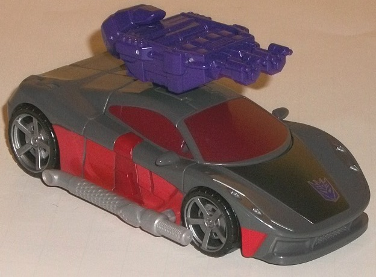
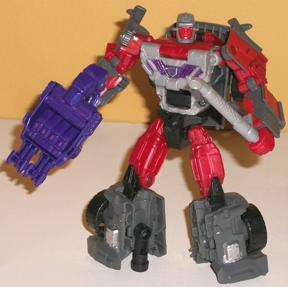

Allegiance
: Decepticon
Size
: Deluxe
Difficulty of Transformation to Robot
:
Easy
Difficulty of Transformation to Leg
:
Very Easy
Difficulty of Transformation to Arm
:
Easy
Color Scheme
: Dark gray, moderately
dark semi-metallic red, moderately dark semi-metallic cherry red, and some
silver, light metallic gray, dark glossy purple, dark metallic gunmetal
gray, royal purple, very dark metallic violet-red, and black
Rating
: 9.2
(NOTE: Because this is a repaint, this is not a full-blown review. This mainly covers any changes made to the mold and the color scheme, and merely compares it to Combiner Wars Dead End. For a review on the mold itself, read the review of Combiner Wars Dead End here .)
"Brake-Neck" is the new
copyright-friendly name for Wildrider-- like his fellow exclusive release
Quickslinger
,
he was part of an original G1 combiner team, but was sidelined from mass-release
because, just like the original Aerialbots were all jets, the original
Stunticons were all cars, and Hasbro wanted to vary it up a bit for the
mass release. Brake-Neck/Wildrider this time around is a redeco of Dead
End-- much to my delight, since I think that Dead End is the best of the
CW Stunticon molds. Brake-Neck's color scheme very closely mirrors his
G1 color scheme, with his main colors being gray and red, with a fair amount
of black thrown in as well in robot mode. Unfortunately, one of his shades
of gray is that light milky gray that's really blah and should've been
replaced with a more metallic-looking color, but thankfully this shade
of the color is only present on the robot chest and the tailpipe weapon.
All of the rest of the gray is dark gray, which is by far the most dominant
color in his vehicle mode, in particular. By itself, just grays and blacks
would look pretty boring, but thankfully there's a good amount of semi-metallic
cherry red in his robot mode-- on his fists, upper arms, and upper legs.
It's a really nice-looking shade of the color (though the red paint is
just a TITCH duller than the plastic, but the color mismatch is only slight),
and it contrasts excellently against both the black and the dark gray.
In vehicle mode there's a bit less of it-- mostly the stripes along the
sides-- though the windows are a really dark, rather sinister-lookng violet-tinged
color of metallic red, which looks mighty nice. There's also a bit of gunmetal
gray on his front hood-- a nice color in and of itself, but it's so close
to the dark gray plastic it doesn't really contribute much to the color
scheme beyond being a spot with a metallic sheen, really. There's also
some silver on the wheel hubs, headlights, and robot feet, which helps
to provide a bit more contrast if not color, and a bit of purple paint
on the chest, which helps break up that light milky gray some, at least.
No mold changes have
been made to Brake-Neck, with the exception of a new headsculpt-- made
to look similar to Wildrider's G1 cartoon headsculpt, which is a rather
angry-looking red face surrounded by a helmet with rather weird pointy
antennae sticking out at the "ears". It's a good headsculpt, even if not
one of my favorites, and it obviously fits the character well.
As a mold, I enjoy Brake-Neck
considerably more than his "replacement"
Offroad
.
Thus, for those of you who want the team as it appeared in G1 or simply
want the team based upon the strength of the molds, I'd go with Brake-Neck.
However, if you're looking for a more varied Menasor combiner, or are looking
for something that looks better color-wise, I'd go with Offroad-- the latter's
green and aquamarine headlights are more striking than Brake-Neck's various
shades of red against the dark gray.
Decepticon Operational Status Update,
reported by Soundwave:
Brake-Neck is truly one of the oddest
members of the Decepticon forces. In vehicle mode he's capable of top speeds
near 250 mph, which gives him all the momentum he needs for his favorite
tactic: crashing into things. Time and again, Brake-Neck has raced into
combat-- functioning as "the tip of the spear"-- and ended up in a bent
and twisted wreck. He enjoys impact, howling with unnerving laughter before,
during, and after his spectacular crashes. In robot mode, his scattershot
blaster enables him to target multiple opponents simultaneously. With fellow
Stunticons forms Menasor.
CONCLUSION: Combat approved and endorsed.
HISTORY (extracted from compulsory
biographical download):
An unending barrage of high-speed collisions
has left Brake-Neck's sanity in question. Is his recent name change a signal
of some sort of processor breakdown? Decepticons normally don't worry too
deeply about their teammates, but Brake-Neck is needed to form Menasor.
If his downward spiral continues, he may find himself replaced. Forms either
an arm or a leg of Menasor, the combined form of the Stunticons.
Review by Beastbot